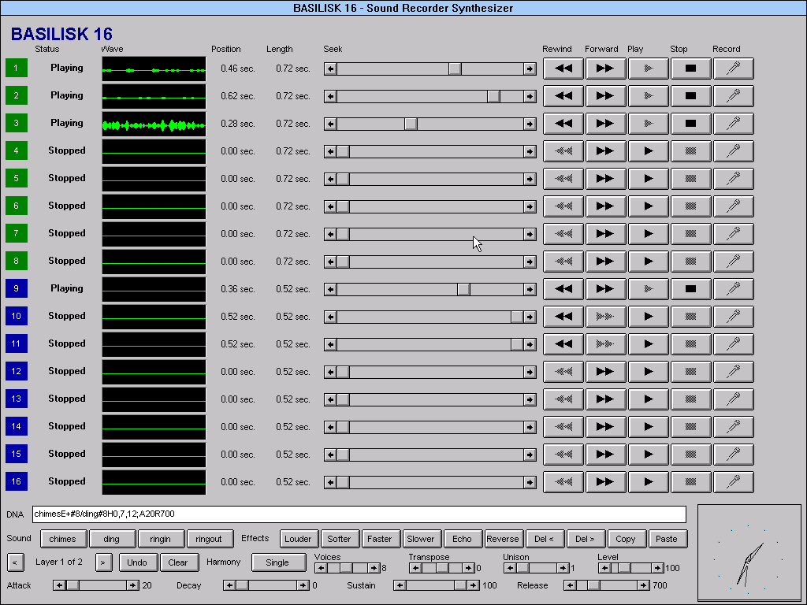
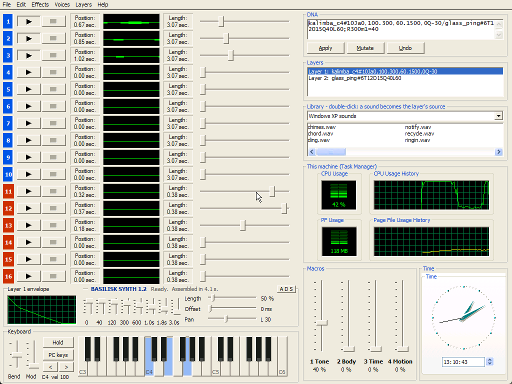

Sixteen Sound Recorders, one instrument
BASILISK 16 and BASILISK SYNTH are instrument plugins for your DAW. Each one runs a real old Windows inside the plugin, opens sixteen copies of Sound Recorder, and plays your notes on them. Every sound is built with Sound Recorder's own menu commands. The plugin never makes a sound of its own, and everything on this page was recorded from it.
BASILISK 16 loading in a DAW: Windows for Workgroups 3.11 resumes, its sixteen Sound Recorders lose their title bars and line up, and the first preset plays. The picture is the plugin's own window and the sound is its output, captured together.
See it play
These are captures of the emulated screen and the plugin's audio from the same run, frame by frame, at the editor's own 1024×768. A BASILISK SYNTH (Windows XP) set follows its 1.2 release.
What you can do with it
A sound is a DNA, one line of text: layers of Sound Recorder commands, then settings. chimesE+;R900 is CHIMES.WAV with Add Echo and Increase Volume, and a 900 ms release. Type one into the editor, pick a preset, or click the Effects buttons. The same DNA plays in both instruments.
Layers
Up to 8 layers per sound, each on its own recorders, with its own start offset, pan, level, transpose, harmony and unison. One note can sound up to 16 recorders.
Four macros
Automatable from the DAW. The DNA says what each one moves: a layer's level, pan, offset, transpose, unison spread, envelope speed or echo count. The mod wheel adds to Macro 1.
Envelopes on a real Windows graph
Each layer can have drawn volume and pan envelopes of up to 8 points. In BASILISK 16 a seventeenth Sound Recorder draws the selected envelope in its green wave view.
Keyboard, Mod and Bend
Five octaves of Windows push-button keys, Bend and Mod scroll bars, and Hold. Turn on Keys to play from the computer keyboard. Incoming MIDI holds the keys down and moves the wheels.
Sound you can watch being built
A new sound is built in front of you with Sound Recorder's own menus: Increase Speed, Add Echo, Reverse, Insert File, Mix with File, Copy and Paste. The recorder's row lights up and its status line names each command as it runs.
The library disc
249 public-domain and CC0 sounds (pianos, bells, choirs, bowls, birds, weather, machines) on a drive of their own, used by name: marimba_c4E#16. Collages mix and insert them at any time in a sound: ding@t200Mthunder_rumble.
Presets everywhere
71 programs in BASILISK 16, in your DAW's preset list and in a Preset drop-down inside Windows. Saving a preset saves its DNA, so a sound copied from this page pastes straight into the editor.
Batch rendering
render311 renders a DNA plus a MIDI file to a WAV through the real machine, faster than real time and bit-identical on Windows, macOS and Linux. The preset demos below were made with it, except the six macro presets, which were rendered by the VST3 in a test host with Macro 1 automated.
Windows Help, the old way
Each instrument has a help file for its own Windows' help viewer: WINHELP.EXE in Windows 3.11, winhlp32 in XP. It has a contents page, Search, glossary popups, the strips and panels explained, and a full DNA reference. It is compiled from plain text by a small WinHelp compiler written for this project, without Microsoft's tools. These are screenshots of it in the real Windows 3.11 viewer. The help files are written and tested and will ship in the next releases of both plugins.


Sound packs and categories
| 3.11 originals | BASILISK 16's own: Windows 3.11's CHIMES, DING, RINGIN and RINGOUT, sped up, slowed, reversed, echoed, stacked and spliced. |
| Library disc | Layered instruments built from the library disc's sounds: Glass Piano, Bowl Swell, Cello Breath, Kalimba Train and more. |
| Factory | The presets shared by both instruments. They are written for Windows XP's 35 sounds; on 3.11 the XP-only names play DING, so these sound different in BASILISK 16. |
Hear every preset
Each preset plays a short phrase of the kind it is made for: pads play slow chords, basses a bassline, plucks an arpeggio, bells a melody. The phrases are MIDI, rendered through the real plugin, then only levelled to the same loudness. Presets that sound wrong are marked, not hidden.
BASILISK SYNTH 1.2 is being finished. Its preset demos, recorded the same way from Windows XP's Sound Recorder, will appear here when it is released. Until then, BASILISK SYNTH 1.1 is available.
Get them
BASILISK 16's download is complete: the plugin, Windows 3.11 and its Sound Recorders, the library disc and the batch renderer, with nothing else to install or find. BASILISK SYNTH 1.2 ships the same way, with Windows XP built in.

BASILISK 16 1.2.0
Windows 3.11's SOUNDREC.EXE. VST3 for Windows and macOS, and AU on macOS.

BASILISK SYNTH 1.1
Windows XP's sndrec32.exe. VST3 for Windows and macOS, and AU and CLAP on macOS. Version 1.2 is on its way.
All downloads and install stepsSource
Windows XP, Windows for Workgroups 3.11, their sounds and Sound Recorder are Microsoft's, included as part of this art project. The Windows images came from Windows for Workgroups 3.11 and Windows XP Professional SP3 as preserved by the Internet Archive. The library disc's sounds are public domain and CC0; each one's source is listed on the disc. The emulators are QEMU and DOSBox Pure (GPLv2), and the plugins are built with DPF.